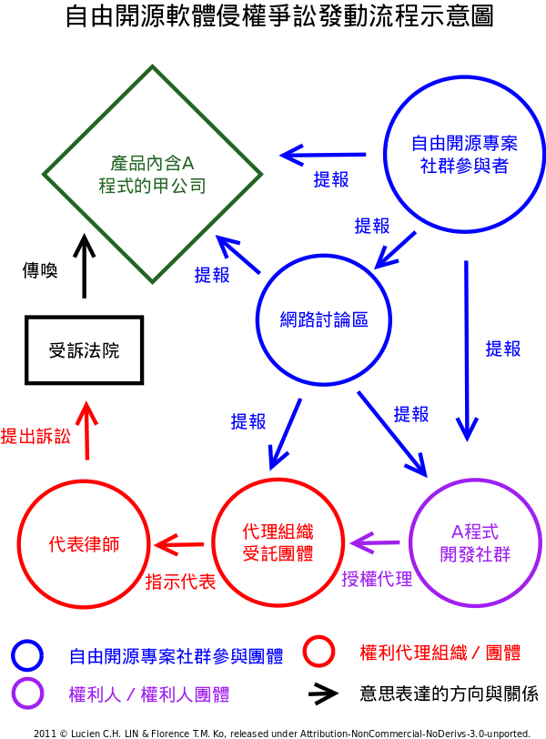

也紀念我們永遠的朋友 李士傑先生（Shih-Chieh Ilya Li）。
Open Source Software license
 We provide Open Source Software license and legal materials via this page.
We provide Open Source Software license and legal materials via this page.
自由開源軟體侵權警告與因應流程
自由開源軟體雖然可以被自由地修改與散布，但其仍然是受到著作權保護的客體，所以若是使用者的利用方式不符合其授權條款所預設的遊戲規則，嚴重時仍然會引發後續的司法訴訟與糾紛。然而、其實許多爭端在開始時仍然具有溝通協商的空間與可能性，本文主要便是就自由開源軟體被不當利用時，所可能收受到的警告信內容來進行披露，並對後續的處理方式，做一個概念的引導及處理流程的建議。
以 Copyleft 類別授權元件為大宗
近年的自由開源軟體侵權爭議案件，多數是以違犯 GNU GPL (GNU General Public License) 等 Copyleft（註一）性質授權元件的遊戲規則為大宗，這是因為具有 Copyleft 性質的自由開源軟體授權條款，尤其是 GPL 類型的授權方式，其約束被授權人的義務性要求嚴格，且參與者於自由開源軟體社群中，不乏對於「軟體自由 (Software Freedom)」、「資訊人權 (Freedom of Information)」理念有較高堅持者，對於自由開源軟體分享與合作的觀念，也具有一定程度的使命感，是以此等參與者可能會不計較訴訟勞費的代價，並基於其維護理念的堅持而提出法律爭訟；再者、目前商用影響力極高的自由開源作業系統 Linux Kernel，其亦以 GPL-2.0 為其釋出條款，所以也大幅度拓廣了 GPL 授權元件的實務影響範圍，故近年自由開源軟體侵權爭議方面的火種，極大多數皆是經由這類強烈 Copyleft 性質的授權元件所點燃。
警告信件為侵權訴訟發動前的重要徵兆
在自由開源軟體侵權訴訟發動之前，通常涉訴的商業公司會先收受到某某元件不當利用的詢問信函，這些詢問信函、多數是來自於不同自由開源軟體專案的熱心參與者。當他們發現某些商業公司在其產品中取用了自由開源軟體元件，卻沒有適當地提供該元件的程式源碼時，便可能先行透過詢問信函來要求說明，或是請商業公司補充該元件程式源碼的取得方式，而若是溝通不果、或是一再詢問而得不到回應時，則這些參與者便可能將此狀況回報到一些專職的自由開源軟體權利維護計畫或是組織（註二），而後經過這些權利維護組織內部論壇討論過後，如果判定不當侵權利用的事證確實明顯且狀態嚴重，便會接著由其出面聯繫該元件的著作權利人取得代理權，再以權利人本人或是代理人的名義（註三）向不當利用的商業公司寄出侵權警告信函，當商業公司收受到這類由權利人或是權利託管組織所寄發出來的侵權警告信函時，此時離正式的侵權訴訟發動便僅有一步之遙。而依近年自由開源軟體的侵權爭議案例來看，可以說、這些警告信件、便是侵權訴訟正式發動前的重要徵兆。
▲ 圖1 自由開源軟體侵權爭訟的發動流程示意圖
以提供完整程式源碼為主要訴求
原則上一封正式的自由開源專案侵權警告信件的內容，會有以下幾個重點訴求：
-
廠商怠於提供程式源碼的義務性要求將引發失去合法授權的效果：警告信件的首要內容、將指出涉及侵權利用的產品型號，以及其所採用的自由開源軟體元件，並主張該產品依照授權條款規定，應該要採用「提供程式源碼」的釋出方式，才可以合法地進行商業散布；其後警告信件更將依據條款內容指出「不依照自由開源軟體授權條款的散布行為，將導致散布者失去原依條款所能取得的合法授權。」也就是說、此相當於法律行為上的解除事由 (Any attempt otherwise to propagate or modify it is void, and will automatically terminate your rights under this License.)（註四），基於此一條款、廠商不遵守自由開源軟體授權契約的違犯行為既已發生，則其本來依照自由開源軟體授權條款所能得到的合法授權，便已嗣後自動解除、而無法再以被合法授權者的身份，繼續散布相關產品。
-
建議廠商調整產品程式源碼的釋出方式：接著警告信件的寄發者，將以權利人本身或其代理人的身份，傳達可以有條件的為不當散布該軟體專案的廠商恢復合法授權，前提是該廠商願意配合在未來修正產品的釋出狀態，也就是說、必須改依合乎授權條款所有義務性規定的方式來散布產品，並與寄發警告信的權利人與權利維護團體協同作業，以完成這個改正作業；而有時警告信內容亦會直接例示出協同作業所需耗費的工時與成本，以預先讓收受到警告信的廠商能直接進行費用評估。
-
若不配合協同作業則必須停止產品的散布：最後、警告信末會對不當散布該軟體專案的廠商做出最具殺傷力的警告，那就是：「如果廠商不願採納建議，配合發信的權利人與權利維護團體協同進行產品釋出狀態的修正，則此後接續的產品散布行為，皆會被視為明知而故意為之的惡意侵權行為。」在這樣的基礎上，拒不改善產品源碼散布方式的廠商，未來便可能會在司法訴訟上被控以加重性的賠償金額 (higher than the amount of damages estimated)；並且、部份的警告信函甚至強調「單純的自行修正錯誤並不能自動恢復因已違犯授權條款在前而失去的權利（註五）」，而更以此手段約制收到警告信函的廠商，必須依照此權利人與權利維護團體所建議的修正方式，來進行後續產品程式源碼的散布。
▲ 圖2 自由軟體基金會早期寄發的侵權警告信範例圖
建議的因應方式與處理流程
其實、部份自由開源專案權利維護團體的核心參與者亦公開表示過（註六）：「查緝自由開源軟體專案的侵權事件，對他們來說僅是維護自由開源專案協力共工法則的必要手段，就如同行車超速照相攝影機一般，其設置目的並不是要嚴格查緝到每一個超速行車的駕駛，但就是維持一個必要的舉發機制，有了這樣的機制、一方面讓多數人普遍皆能尊重自由開源軟體必要的遊戲規則，二方面則是在侵權事態嚴重的少數案例上，也能啟動相應的權利救濟機制。」所以、對於自由開源軟體侵權警告的因應流程，首要對企業界建議的基本原則是保持對軟體社群朋友開放與尊重的態度，當散布自由開源軟體專案的方式事涉侵權而被告知，應盡量第一時間簡短而訊速的回覆詢問者的問題，以免予詢問人有面對拖延戰術、廠商避而不談的感受，再者、此類詢問人雖大多並非軟體專案的實際開發者，但其皆有將此不當散布自由開源軟體元件的違犯行為，提報予權利人的機會與可能性，所以若是能在其詢問階段便主動解決程式源碼提供不當的問題，便可以大幅度降低該產品，日後收到權利人警告信函及接續發動司法訴訟程序的可能性。而若已正式收到專案權利人寄發的警告信函或訴訟調解聲請等，建議可依下列程序進行處置，以將可能遭逢的不利益程度降至最低：
-
組成審檢小組且釋出善意回應：公司應自行組成審檢小組，進行受控產品的程式碼審檢，並求教有經驗的相關諮詢機構，以查驗受控事項是否屬實；而若受控事項確然屬實，則對權利人與權利維護機構亦應馬上進行善意回應，表達已就受控事項進行專案處理，嗣內部評估報告出爐，即會依授權條款各該規定進行處理；
-
評估修正損失並尋求協商解決：公司應後續進行內部評估，估算如修正產品釋出狀態及開放程式源碼，會造成多少實際金錢支出、及失去哪些營業秘密。而若公司短期之內無法迅速完全採用自由開源軟體的授權方式來釋出產品，則亦可視情況採取協商解決的方式：第一種協商的方向是與原權利人溝通採行商業授權方式的補正，也就是說、若該權利人對於整個軟體元件有另行授權的地位，則可與其協商改以商業授權的模式取得該元件的合法授權，以解決現行釋出方式不符合自由開源軟體授權模式的狀態；而第二種協商方式，則是試著藉由溝通找出權利人與權利維護團體能夠接受，而公司亦不至遭受不可承受傷害的解決方式，例如承諾在未來一個月內釋出該產品完整可供安裝、重新編譯的程式源碼，或是三個月內完全置換事涉侵權的程式源碼等等的彈性作為。而如協商過程對於條款的解釋範圍有所疑義，則尋求適當的專業機構或法務人員協助分析，最後再依協商的結果，踐履雙方皆同意的處置方案。
-
採取隔離措施與加強觀念教育：記取經驗、若公司有不得向外散布的核心智慧財產權利，則在自由開源軟體元件的採用策略上，應採「先前檢審」的預先措施，避免自行開發的核心軟體元件與嚴格 Copyleft 性質的自由開源軟體程式直接結合 (merge)，以免除日後為其授權拘束性（License Inheritance，註七）所及，而必須在散布時一併提供核心元件程式源碼的風險；最後一點、若公司確定政策上將固定採用自由開源軟體程式為其商品產出的一環，則應事前妥善規劃軟體授權方面的法律教育訓練課程，近年許多自由開源軟體的授權爭議，每每肇生於員工法律授權概念不足的情形下，部份產品研發人員在不完全知悉軟體授權規則的前提下，便主動將部份帶有強烈授權拘束性質的自由開源軟體元件抄寫進產品專案裡，致使公司因連帶責任之故而無法舉證免責，對於這樣的狀況、商業公司亦應定期加強聘僱員工的授權意識，以免除此類型的風險再次發生。
註一：Copyleft 此一觀念最早由 GNU Project 的主持人 Richard M. Stallman 所提出，而被廣泛運用在 GNU Project 所適用的公眾授權條款如 GPL、LGPL 與 GFDL，其主張自由開源軟體的著作權人仍可主張著作權法所賦予的權利，再以著作權人的身份規範他人使用其作品的方式，原作者可於授權條款中，明示允許他人對作品進行修改，但同時要求衍生作品的改作人，亦必須採用同樣的授權模式向後散布這個衍生作品，以確保原程式與衍生程式能持續為社會公眾自由使用，此種以著作權人立場要求原作品及其衍生作品，於後續散布過程仍須依循同樣遊戲規則的授權方式，就是 Copyleft 的運作概念，此概念原創者的理念表達可參照，Richard M. Stallman, What is Copyleft?: https://www.gnu.org/copyleft/copyleft.html
註二：例如透過 Mailinglists 的方式聯繫歐洲的 gpl-violations.org project：https://gpl-violations.org/mailinglists.html，或是採用電子郵件將不當利用的狀況提報給美國的 GNU project：https://www.gnu.org/licenses/gpl-violation.html
註三：在歐洲與美國，均有活躍的計畫與組織提供這類代理的服務：歐洲的 gpl-violations.org 計畫是由 Harald Welte 於 2004 年初發起，該計畫多以個案式代理的方式，為自由開源軟體專案的權利人代為寄發侵權警告信，與代理進行後續的訴訟事宜；而美國的軟體自由法律中心 (Software Freedom Law Center, SFLC)、與軟體自由託管機構 (Software Freedom Conservancy, SFC)，則多是採專案權利常態託管的方式，為其會員專案進行侵權防治的整體代理行為，SFC 目前託管軟體專案包括 BusyBox、Git、jQuery、Samba，與 Wine 等重要的自由開源軟體專案，其詳細列表可見右列連結：https://sfconservancy.org/members/current/
註四：此類同解除事由的說明文字，以 GNU GPL 與 GNU LGPL 為例，GPL-2.0 規定於第 4 條、LGPL-2.1 規定於第 8 條，GPL-3.0 與 LGPL-3.0 同規定於條款的第 8 條第 1 項。本文內文引用的是 GPL-3.0 與 LGPL-3.0 第 8 條第 1 項的文字。
註五：關於散布者以違犯自由開源軟體授權條款的方式散布程式後，能不能因自行修正方式來恢復合法授權 (reinstate)，需就個別條款細部的規定來看。舉例來說、於 GPL-3.0 第 8 條的 2、3、4 項，便進一步律定了違犯者復權方式與失權條件的相關規定，但 GPL-2.0 就此議題並沒有充份地陳述，以致於部份的評論者認為只要依照 GPL-2.0 授權條款的方式修正產品的釋出方式即可恢復合法被授權的狀態，但亦有部份論者依嚴格文義解釋的立場，認為一經失權者未來就同一專案不可再得到合法授權，持此嚴格意見的自由開源專案權利維護團體，包括軟體自由法律中心與軟體自由託管機構的部份核心成員。
註六：文摘自由軟體鑄造場林懿萱、林誠夏採訪文，「GPL 的授權規則與技術工程遵循之道–講者 Harald Welte 與 Armijn Hemel 會後專訪」：https://www.openfoundry.org/tw/foss-news/8214-gpl-harald-welte-armijn-hemel-
註七：授權拘束性 (License Inheritance) 與 Copyleft 的內涵相同。關於授權拘束性進一步的說明，請參見：林誠夏，GPL 條款對於衍生程式的判定標準與其授權拘束性的擴散範圍（上），https://www.openfoundry.org/tw/legal-column-list/8446
OSSF Newsletter : 第 187 期 PaaS：程式語言開發在雲端「Programming in Paas」（上）
Tags: copyleft, gplviolationorg, osspolicy, sflc, 授權拘束性, 侵權, 復權, 訴訟案件, gpl, gpl2, gpl3, lgpl, agpl,
Category: Legal Column
Address：No.128, Sec.2, Academia Rd., Institute of Information Science, Academia Sinica, Nangang District, Taipei City 11529, Taiwan (R.O.C).
Privacy Policy. Terms-of-use